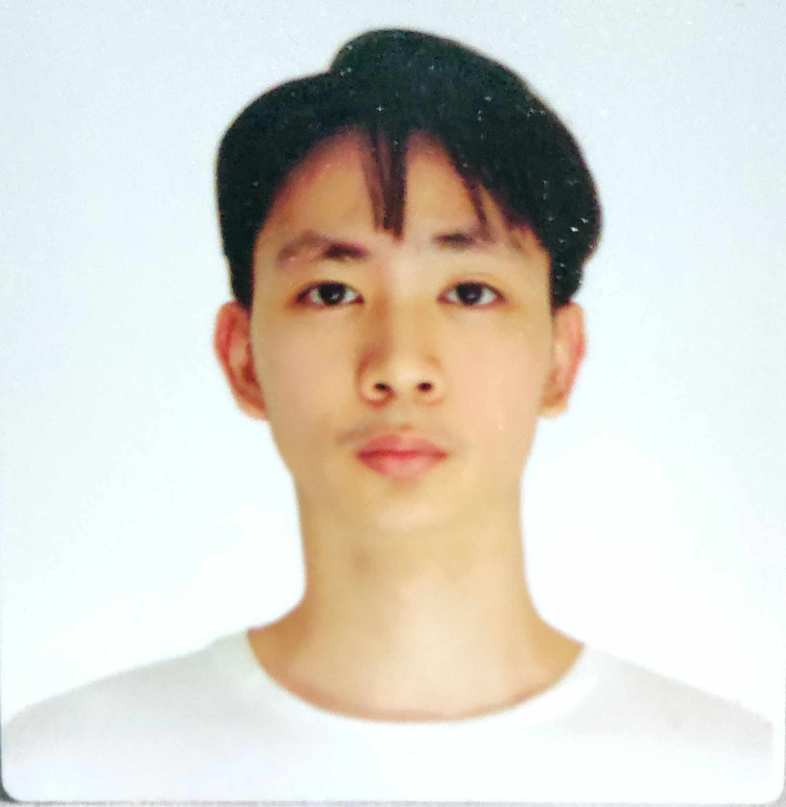

Kyle Aaron S. Emuslan

Summary
To provide compassionate and quality care to patients of different backgrounds and conditions, while enhancing my professional development and learning from experienced mentors.
Education
Bachelor of Science in Nursing (BSN) S.Y. 2024 - 2028
University of the Philipines Diliman, Quezon City
Senior High School S.Y. 2022 - 2024
Arellano University JAS, Pasay City
- Focus on STEM curriculum, taking advanced classes in math, science, and technology
- Participated in a science fair and received an honorable mention
Junior High School Graduate S.Y. 2018 - 2022
PNHS Baclaran, Parañaque City
Work Experience
St. Luke's Medical Center 2028-2029
- Administer first aid treatments, routine blood pressure checking and provide medications for employees as needed
- Educated patients and families on disease prevention and health promotion
- Provided outpatient intravenous, subcutaneous, and intramuscular therapy in an outpatient setting
- 1 year of experience at the hospital bedside (ER, OR OPD, ICU, ward, etc.),
Skills
- Basic health care, appropriate emergency and first-aid management, and medications.
- Develop/complete reports that track and trend health activities/outcomes
- Adaptable and can learn quickly.
- Tech-savvy and proficient in using computers.
- Strong interpersonal skills
- Proficient in verbal & written English
Certificates & Achievments
- Basic Life Support Certificate ( December 2029)
- Pediatric Nurse Certificate (October 2029)
- Family Nurse Practitioner Certificate (July 2029)
- Graduate of BS Nursing and passed the Nursing Licensure Examination ( August 2028)
- Selected as a member of the National Honor Society for academic excellence and community service. (November 2028)